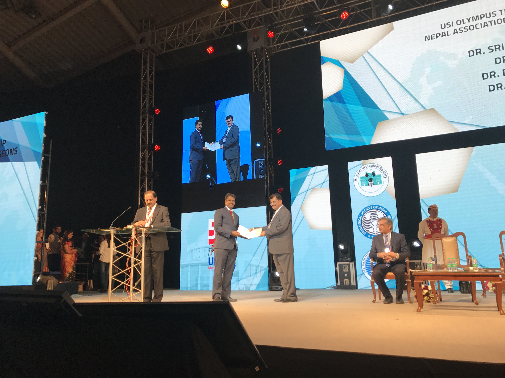
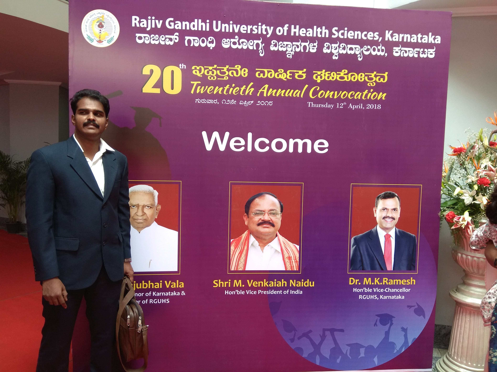
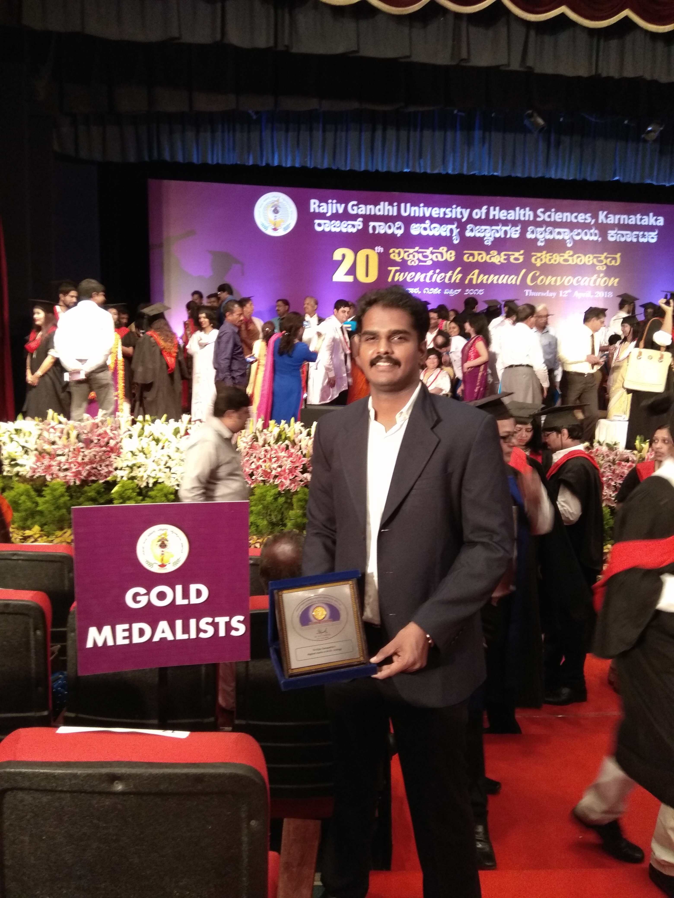
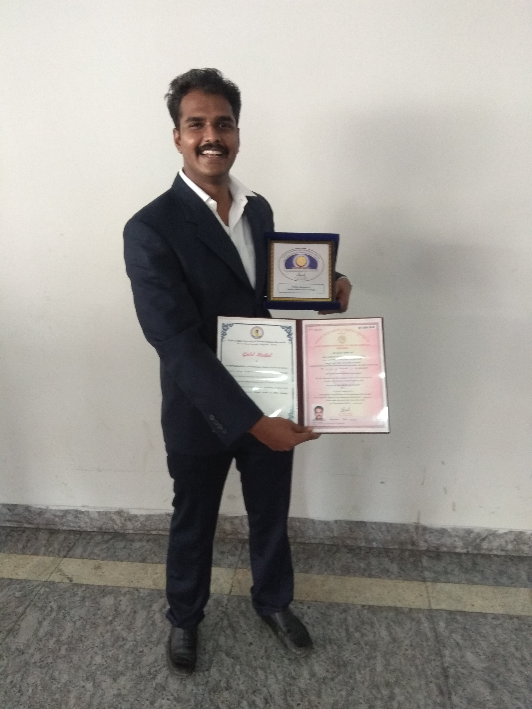
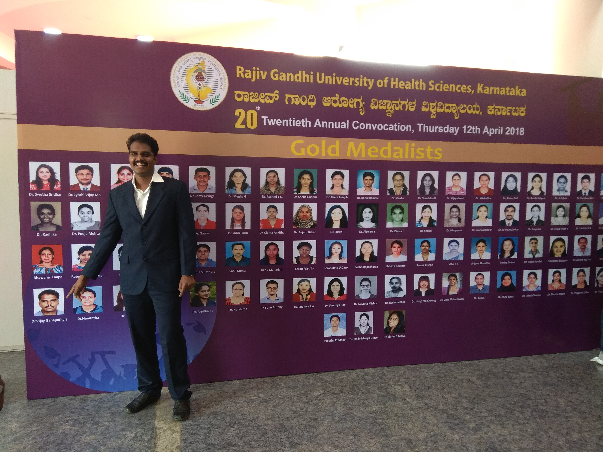
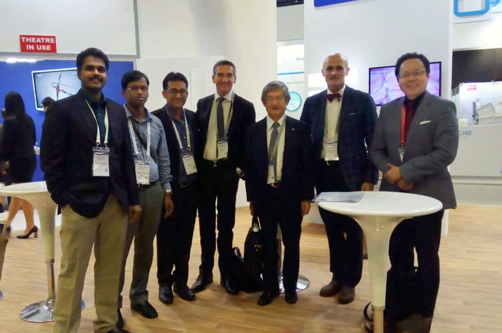
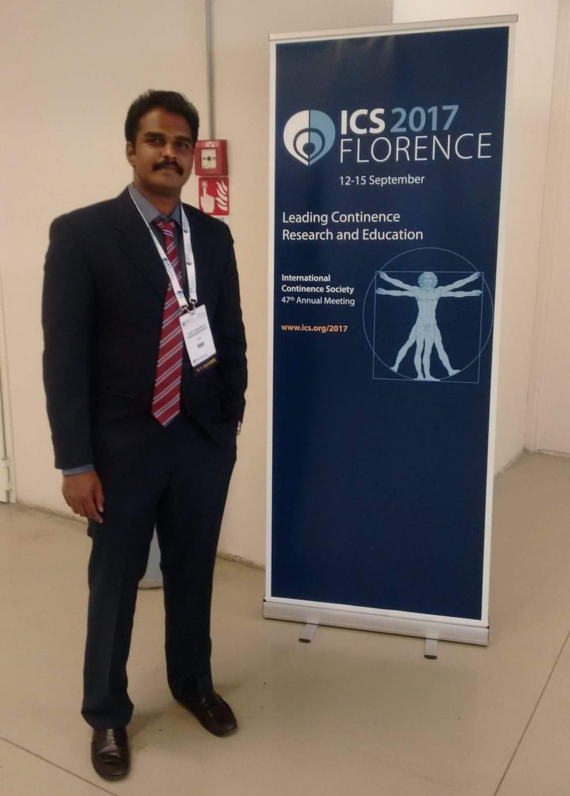
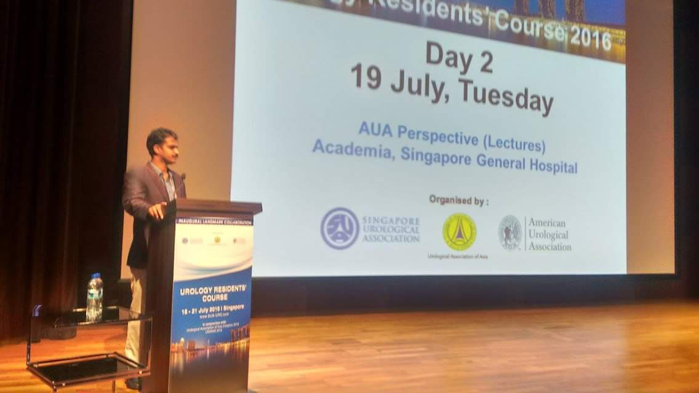

MCh Urology Gold Medal
Awarded by His Excellency Vice President of India, Shri M. Venkaiah Naidu.
Celebrating gold medals, national board certifications, and international urological conferences across India, Singapore, Florence, and Paris.
Awarded by His Excellency Vice President of India, Shri M. Venkaiah Naidu.

Honored with the prestigious JIPMER Gold Medal for top academic performance in MS Surgery.

Recognized as Best Postgraduate in Surgery by the JIPMER Alumni Association.

Dr. S.C. Mitra Endowment Gold Medal for highest score in MS Surgery.

Received the DNB qualification and merit citation in New Delhi.

Dr. B. Ramamurthi Gold Medal awarded by National Board of Examinations, New Delhi.

Special convocation ceremony for MCh Urology Gold Medal in Bengaluru.

Milestone convocation honors celebrating completion of super-specialty MCh Urology.

Randomized clinical trial presented at global endourology forum.

Commemorating completion of super-specialty surgical residency.

Key moments from the MCh Urology Gold Medalists convocation.

Celebrating academic honors alongside colleagues and mentors.

International Continence Society Urogynaecology Fellowship in Florence, Italy.

Global urodynamics and pelvic floor research exchange in Italy.

ICMR-sponsored participation in international continence research.

Clinical fellowship in Andrology and Endourology in Singapore.

International academic collaboration at the UAA Urology Conference.